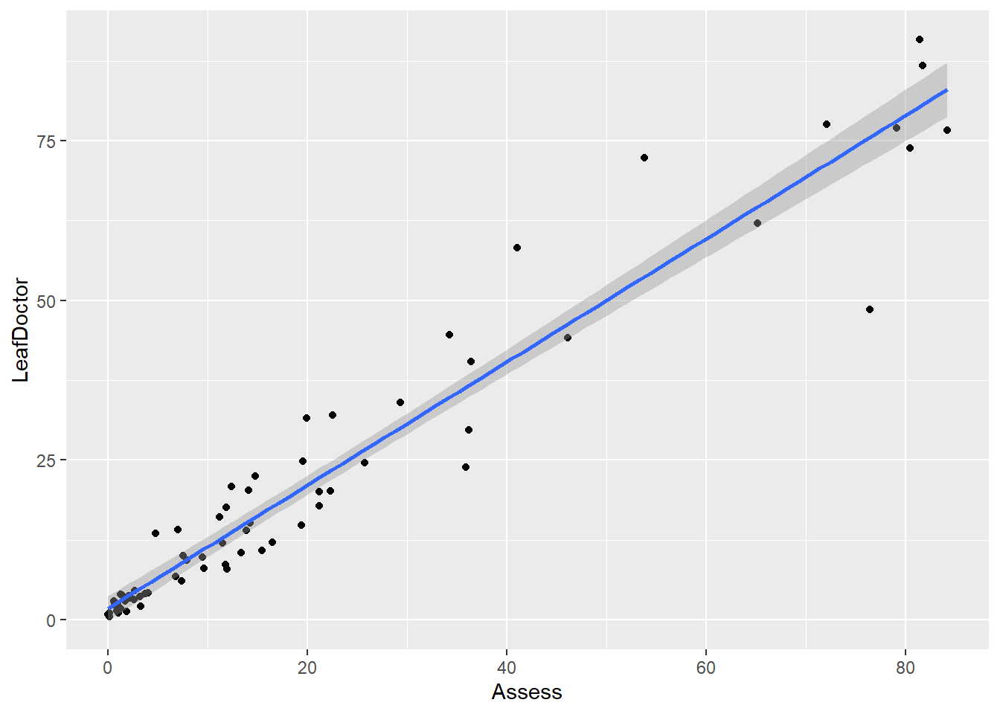

library(tidyverse)
library(gsheet)
library(dplyr)
imgs <- gsheet2tbl("https://docs.google.com/spreadsheets/d/1bq2N19DcZdtax2fQW9OHSGMR0X2__Z9T/edit#gid=373270992")Correlação
Correlação
A correlação representa a associação entre duas variáveis respostas. As variáveis podem estar dissociadas ou apresentar associação fraca ou forte. O teste de correlação permite determinar qual é a correlação entre as as variáveis-resposta (uma por uma e de todas juntos).
Quanto menos dispersos os dados, mais forte será a correlação entre duas variáveis.
R (coeficiente de correlação de Pearson): varia entre -1 e 1, sendo que < 0 uma correlação negativa e > 0 uma correlação positiva. Quanto mais próximo de 1 ou -1, mais forte é a correlação.
Correlação =/= casualidade (na casualidade não existe uma verdadeira correlação entre elas de causa-efeito, é uma correlação espúria)
Important
Diferente de regressão. Regressão é pra predizer que Y é em função de X. Usam o coeficiente de determinação R-quadrado.
Importação dos dados
Visualização dos dados
Um gráfico de boxplot foi criado para visualizar a distribuição e a variabilidade dos dados.
imgs |>
pivot_longer(3:5, names_to = "method",
values_to = "value") |>
ggplot(aes(method, value))+
geom_boxplot()
Posteriormente foram criados gráficos de dispersão entre cada variáveis respostas para visualizar se existe alguma correlação entre elas.
imgs |>
ggplot(aes(Assess, LeafDoctor))+
geom_point()+
geom_smooth(method = "lm")
imgs |>
ggplot(aes(Assess, ImageJ))+
geom_point()+
geom_smooth(method = "lm")
imgs |>
ggplot(aes(LeafDoctor, ImageJ))+
geom_point()+
geom_smooth(method = "lm")Teste de Correlação
O teste de correlação entre as variáveis pode ser executada usando a função cor().
cor(imgs$Assess, imgs$LeafDoctor) #Dá o valor do coeficiente de correlação[1] 0.9666367O teste fornece o coeficiente de correlação, sendo igual a 0.966, indicando uma correlação positiva e forte.
Outro teste pode ser realizado usando a função cor.test(). Essa função fornece um teste mais completo, com informações do coeficiente de correlação, intervalo de confiança e p-valor (Ho: coeficiente de relação = 0)
cor.test(imgs$Assess, imgs$LeafDoctor)
Pearson's product-moment correlation
data: imgs$Assess and imgs$LeafDoctor
t = 31.119, df = 68, p-value < 2.2e-16
alternative hypothesis: true correlation is not equal to 0
95 percent confidence interval:
0.9466882 0.9792005
sample estimates:
cor
0.9666367 Usando o pacote AgroR
No pacote AgroR, pode ser usado a função corgraph() que fornece a matriz de correlação, com dados do coeficiente de correlação e a significância entre cada variável.
imgs2 <- imgs[, c("Assess", "LeafDoctor", "ImageJ")]
library(AgroR)
corgraph(imgs2) Var1 Var2 cor p
2 LeafDoctor Assess 0.9666367 5.972544e-42
3 ImageJ Assess 0.9776918 8.143613e-48
6 ImageJ LeafDoctor 0.9797478 3.144091e-49
Através da matriz, percebe-se que a correlação entre as três variáveis respostas é forte.
Outra alternativa de função é a corrplot() do pacote corrplot, que também fornece uma matriz de correlação.
library(corrplot)
cor_imgs2 <- cor(imgs2)
corrplot(cor_imgs2, method = "number", type = "lower")
corrplot(cor_imgs2, method = "circle", type = "lower")Correlação - conjunto de dados 2
Importação dos dados
campo <- gsheet2tbl("https://docs.google.com/spreadsheets/d/1bq2N19DcZdtax2fQW9OHSGMR0X2__Z9T/edit#gid=866852711")Do conjunto de dados acima, foram selecionados apenas as informações sobre as variáveis respostas.
campo2 <- campo[, c("DFC", "FER", "PROD")]Foi realizada a função corgraph().
corgraph(campo2) Var1 Var2 cor p
2 FER DFC 0.9316978 9.864101e-15
3 PROD DFC -0.6928161 1.110652e-05
6 PROD FER -0.6258321 1.277444e-04
Observa-se que a PROD está mais fortemente correlacionada a DFC (associação negativa). A DFC e a FER estão associadas positivamente